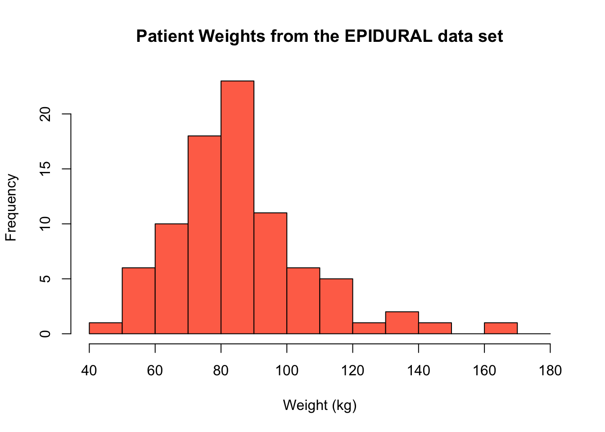
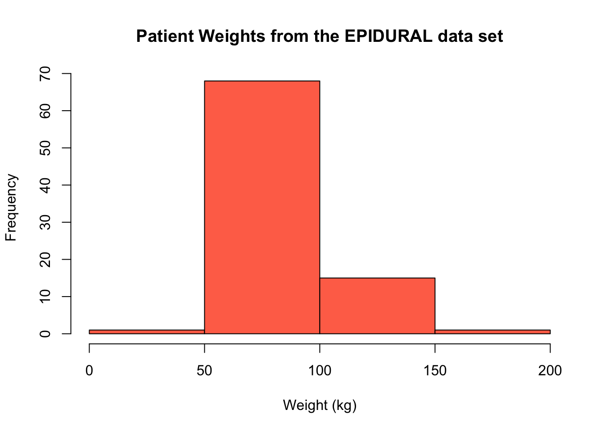
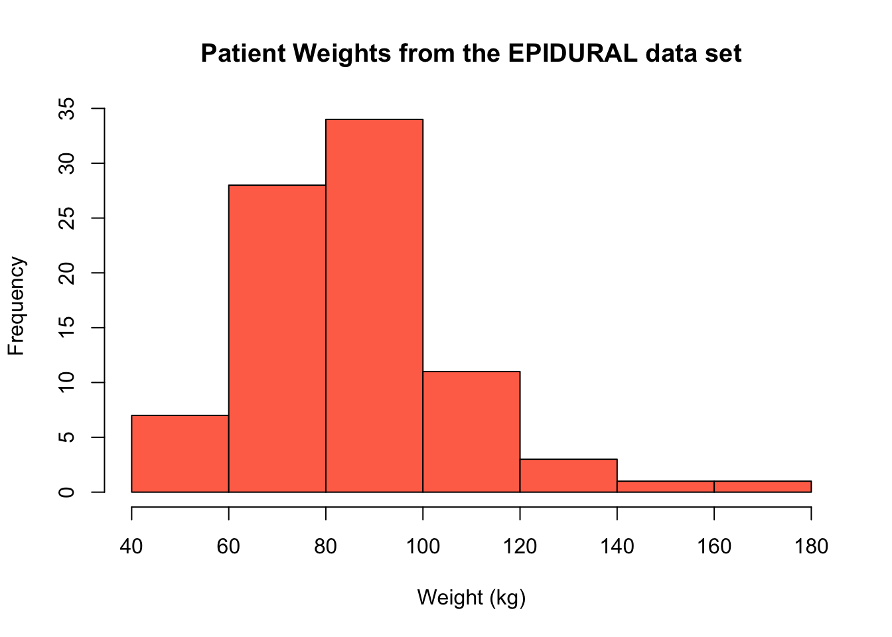
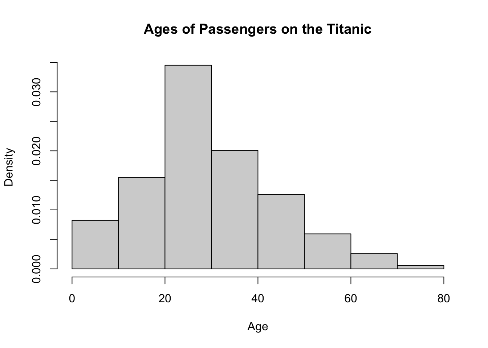
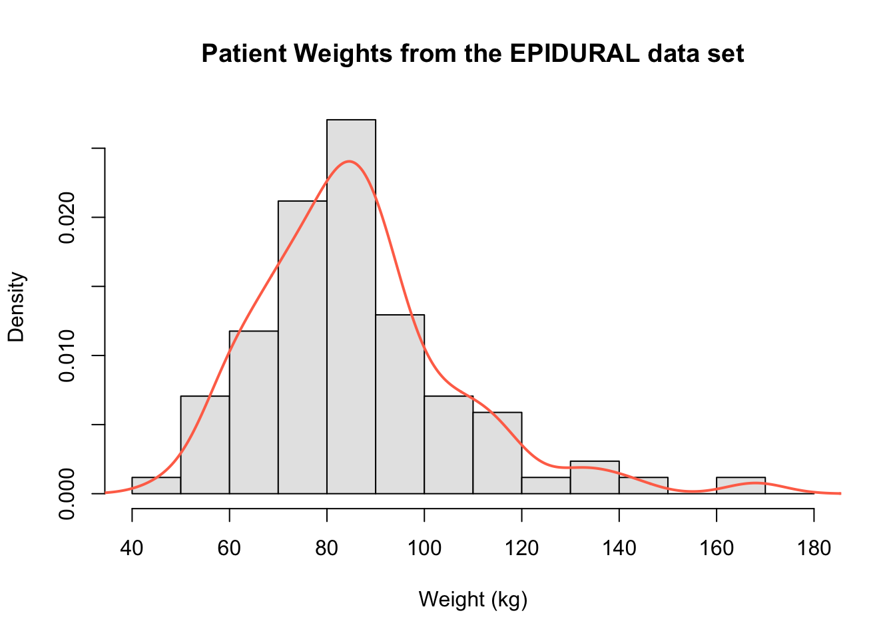
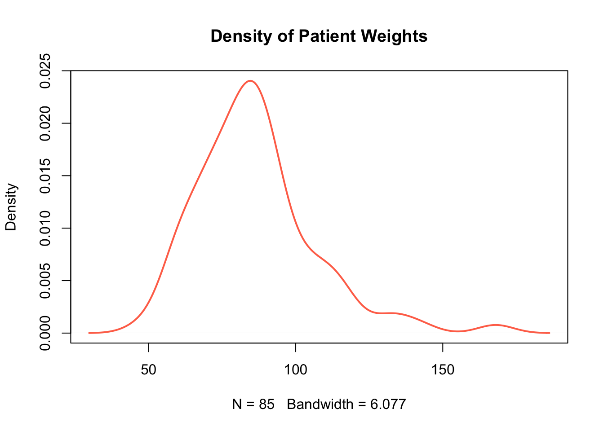

3 Quantitative Data
Quantitative data is the term used to describe numerical data. Essentially, data that can be "quantified" is quantitative data. That is, any information that can be measured, counted or given a numerical value. This could be things such as individuals' height, weight or age, or distances or prices of items.
Quantitative data can be thought of having different "properties", including its shape, center and spread. There are several ways in which quantitative data can be presented to better understand these properties.
3.1 Stem and Leaf Plots
When dealing with quantitative data, a good way to quickly get an idea of the spread of the data is with a stem and leaf plot. This arranges the observations by increasing numerical value and splits each value into a "stem" and a "leaf".
The stem is the beginning of the numerical value - this could be multiples of 10, 100, 1000 or any value really. The leaf is always a single digit, indicating the value of the observation from the data.
Stem and leaf plots can become increasingly hard to read when using large data sets. They are clearest, and easiest to interpret, when they are constructed for relatively small data sets (fewer than 100 observations roughly).
The function for creating a stem and leaf plot in R is stem(). The only necessary argument for this function is x = which is the vector of the numeric values.
We can create a stem and leaf plot showing the weight (in kg) of each patient included in the EPIDURAL data set using the following code. The weights are stored in the variable called kg.
The decimal point is 1 digit(s) to the right of the |
4 | 8
5 | 77999
6 | 0133567779
7 | 01122244455679999
8 | 001233334455566666799
9 | 000011233445678
10 | 334568
11 | 23446
12 | 1
13 | 14
14 | 2
15 |
16 | 8The first row in this plot tells us that the lightest patient is 48kg, the next two lightest partients are both 57kg and so on. The argument scale = 2 has been included so that the stem shows a new row for every 10kg in weight.
The stem may not always be multiples of 10, so pay close attention to the message given The decimal point is 1 digit(s) to the right of the | which will tell you where the decimal point lies.
How would you describe the shape of the distribution of patients' weights?
See Section 2.4.1 Stem-and-Leaf Plots of Probability and Statistics with R for additional examples.
3.2 Histograms
Histograms are a widely used tool for graphically summarizing quantitative data. They look similar to barplots (for qualitative data), however the width of the "bins" (or bars) can be changed in a histogram. This means that you can choose to include more or fewer observations in each bin shown on the plot.
The function to create a histogram in R is hist(). This function takes the following arguments:
x =: this is the vector of numeric values that should be used to create the histogram.breaks =: this is vector giving the breakpoints that should be used to create the intervals each bar of the histogram represents, or it can be a single value specifying the number of bins that should be in the histogram.freq =: this takes the valuesTRUEorFALSEwhich indicate whether a frequency histogram (TRUE) or a density histogram (FALSE) should be created. By default, a frequency histogram will be created.right =: this takes the valuesTRUEandFALSEwhich indicate whether the intervals used to create the bins should be right-closed (TRUE) e.g. \((x_1, x_2]\), or left-closed (FALSE) e.g. \([x_1, x_2)\). By default the intervals will be right-closed.include.lowest =: this takes the valuesTRUEorFALSEwhich indicates whether the lowest value in the data should be included in the first bin, when right-closed intervals are used.
The only argument that needs to be provided to the hist() function is x =.
We can create a histogram showing the weight of patients from the EPIDURAL data set using the following code. This code creates a vector using the seq() function to use with the breaks = argument. This vector is \(\begin{bmatrix}40&50&60&\dots&180 \end{bmatrix}^\intercal\), so the histogram has a bin including all observations between 40kg and 50kg, between 50kg and 60kg and so on. Because we have left out the right = argument, these intervals are right-closed. This means they are of the form (40, 50], (50, 60], ..., (170, 180] where "(x" represents "greater than x" and "y]" represents "less than or equal to y").
The freq = argument has also been left out of this code, so a frequency histogram is created by default. In this case, the height of a bar represents the number of patients that fall into that particular interval.
hist(x = EPIDURAL$kg,
breaks = seq(from = 40, to = 180, by = 10),
col = "coral1",
main = "Patient Weights from the EPIDURAL data set",
xlab = "Weight (kg)")
If we add in the argument freq = FALSE a density histogram is created instead. The shape of the histogram is identical to the frequency histogram, however the scale on the y-axis has changed. Now, the height of each bar represents the proportion of the patients that fall into that particular interval.
hist(x = EPIDURAL$kg,
breaks = seq(from = 40, to = 180, by = 10),
freq = FALSE,
col = "coral1",
main = "Patient Weights from the EPIDURAL data set",
xlab = "Weight (kg)")We can instead provide a single value to the breaks = argument. Most of the time, this defines the number of bins that should be used in the histogram, however sometimes the plot created will have a slightly different number from what you specify. This is because R uses "pretty values", which essentially means a number of bins will be selected for you, to best produce a sensible looking histogram.
For example, when we specify breaks = 4, there are 4 bars in the histogram produced. This is because it makes sense to split the range of our data into the four sets (0, 50], (50, 100], (100, 150] and (150, 200].
hist(x = EPIDURAL$kg,
breaks = 4,
col = "coral1",
main = "Patient Weights from the EPIDURAL data set",
xlab = "Weight (kg)")
If we instead specify that breaks = 5, note that the histogram produced actually has 7 intervals. This is because the "pretty values" used means that R tries to split the range of our data into at least 5 intervals of the same size, where the upper and lower limit of each interval is an integer. In this case, the intervals used are (40, 60], (60, 80], (80, 100], ..., (160, 180].
It is always a good idea to produce histograms where different intervals have been used to construct the bins to get a proper sense for the shape of the data.
hist(x = EPIDURAL$kg,
breaks = 5,
col = "coral1",
main = "Patient Weights from the EPIDURAL data set",
xlab = "Weight (kg)")
What single value would you provide to the breaks = argument to create the density histogram of passenger ages on the Titanic shown below?

hist(x = TITANIC$age,breaks =,
freq = FALSE,
main = "Ages of Passengers on the Titanic",
xlab = "Age")If you instead wanted to provide the argument breaks = with a sequence generated using the seq() function, how would you do this?
hist(x = TITANIC$age,breaks = seq(),
freq = FALSE,
main = "Ages of Passengers on the Titanic",
xlab = "Age")Both chunks of code below will produce the same histogram shown above.
hist(x = TITANIC3$age,
breaks = 8,
freq = FALSE,
main = "Ages of Passengers on the Titanic",
xlab = "Age")hist(x = TITANIC3$age,
breaks = seq(from = 0, to = 80, by = 10),
freq = FALSE,
main = "Ages of Passengers on the Titanic",
xlab = "Age")
There are several different ways that the breaks used to construct the intervals for a histogram can be constructed. You can read more about these methods in Section 2.4.3.1 Histograms from Probability and Statistics with R.
3.3 Kernel Density Estimators
Since the shape of histograms can change so drastically based on the intervals defined, they can sometimes be misleading when trying to determine the shape of data. Kernel density estimators offer a more reliable indication of the shape of data by taking weighted localised averages (we don't need to know the technical details for our purposes).
The function to create a kernel density estimator in R is density(x). The only argument needed for this function is:
x =: this is the vector of data for which the kernel density estimate should be computed.
This creates a list object in R which can be used to show the kernel density estimate in a plot. In order to superimpose the density estimate over the histogram of the data, we can use the lines() function.
For example, the following code creates the histogram of the patients' weights, and then superimposes the kernel density estimate dens on top.
hist(x = EPIDURAL$kg,
breaks = seq(from = 40, to = 180, by = 10),
freq = FALSE,
col = "grey90",
main = "Patient Weights from the EPIDURAL data set",
xlab = "Weight (kg)")
dens <- density(x = EPIDURAL$kg)
lines(dens, col = "coral1", lwd = 2)
We can again clearly see that the distribution of all patients' weights is right skewed and that the mode is around 85kg.
In order to use lines() to superimpose the kernel density estimate, the histogram created must be a density histogram. It is also necessary to create a plot first because the lines() function only builds on top of a pre-existing plot. Within the lines() function, the additional arguments col = and lwd = have been included to set the colour and line width respectively of the kernel density estimate.
In order to show a kernel density estimate in its own plot, we can use the function plot(). The following code can be used to show the same kernel density estimate as above, but this time without the histogram beneath it.

Create a plot only showing the kernel density estimate for distribution of passenger ages on the Titanic.
To read more about how kernel density estimates are constructed, see Section 2.4.3.2 Kernel Density Estimators in Probability and Statistics with R.